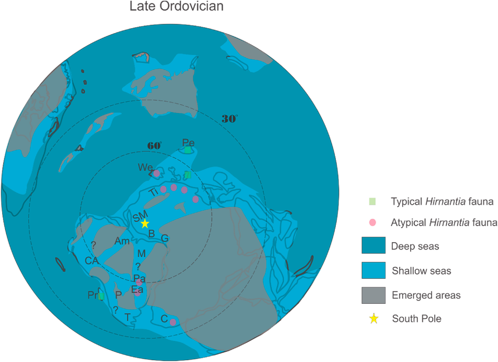

Fossil diversity and taphonomy of glacial and post-glacial lower paleozoic strata, NE Paraná Basin, Brazil

Resumo em Português
Este artigo reporta a ocorrência e a análise tafonômica de uma fauna composta pelos braquiópodes organofosfáticos Kosoidea australis e ?Palaeoglossa sp., os moluscos ?Paleoneilo sp. e ?Cuneamya sp., além de braquiópodes rinconeliformes e os ostracodes Harpabollia sp. e Satiellina paranaensis. Essa assembleia indica idade Hirnanticiana para o topo da Formação Iapó e a base da Formação Vila Maria, na borda nordeste da Bacia do Paraná. Assinaturas tafonômicas e associações de fácies apontam para um ambiente pró-glacial, na zona de transição de antepraia, representado pelas últimas fácies sedimentares da Formação Iapó. Os estratos transgressivos sobrepostos representam o início da Formação Vila Maria, na qual fósseis e litofácies indicam condições predominantemente pós-glaciais em ambiente offshore.Duas tafofácies foram delineadas: uma com fósseis selecionados por tamanho e tipo, depositados em fácies de chuva de clastos originadas do derretimento glacial; e outra, com fósseis autóctones a parautóctones, representando um ambiente offshore pós-glacial. A baixa diversidade faunística aponta para conexões marinhas entre as bacias do norte e sul da África e com bacias sul-americanas, contribuindo para o entendimento das condições paleobiogeográficas durante a transição Ordoviciano-Siluriano no Gondwana meridional.